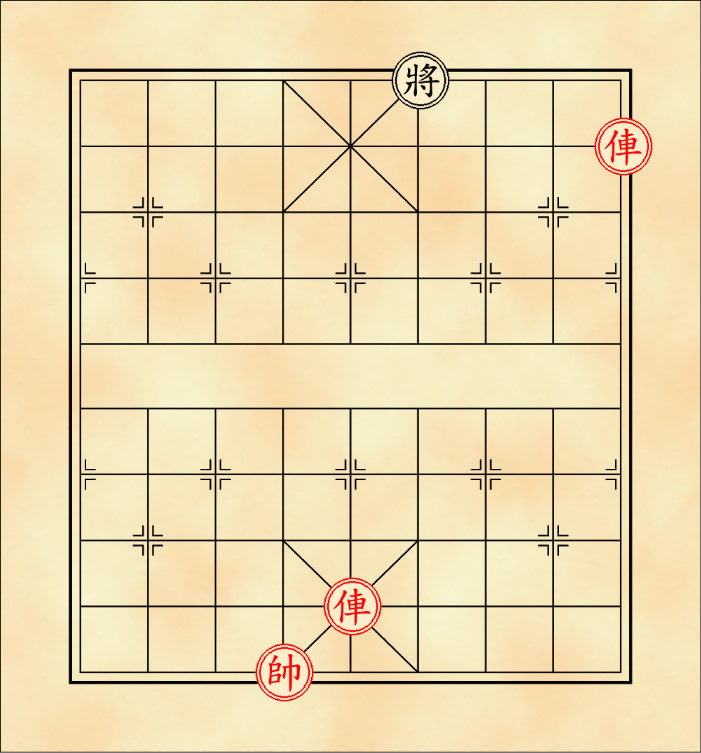

หมากรุกจีน
ตี่(ขุน)
สีดำจะใช้ตัวอักษร 將 ส่วนสีแดงจะใช้ตัวอักษร 帥 ตัวแทนประมุขแห่งกองทัพ เดินได้ภายในเขตพระราชวังเท่านั้น มีเพียงตัวเดียวตลอดทั้งเกม กติกาการเดินตี่มีดังนี้
เดินได้ในแนวตรงทั้ง 4 ช่องรอบตัว สามารถกินหมากในจุดที่เดินได้ และไม่สามารถเดินออกนอกเขตพระราชวังได้

ตำแหน่งการเดิน
ไม่สามารถเดินไปยังตากินของฝ่ายตรงข้ามได้ ซึ่งหากไม่สามารถเดินหมากตัวอื่นได้ด้วยจะถือว่าเข้าตาอับ และฝ่ายที่เข้าตาอับจะเป็นฝ่ายแพ้ ต่างจากหมากรุกชาติอื่น
|
 |
จุดที่ไม่สามารถเดินได้ |
เข้าตาอับ |
เมื่อตี่ถูกเล็งกิน(รุก) จะต้องแก้ไขการรุกนั้นก่อนเสมอ โดยการเดินหนี, เดินหมากอื่นมาป้องกัน หรือกินหมากที่รุกอยู่ หากไม่สามารถแก้ไขการรุกได้จะถือว่ารุกจนและเกมจะจบลงโดยฝ่ายที่ถูกรุกจนเป็นฝ่ายแพ้
|
 |
แก้ไขการถูกรุก |
รุกจน |
หากตี่ฝ่ายใดฝ่ายหนึ่งเดินออกมาประจันหน้ากับตี่ฝ่ายตรงข้าม โดยไม่มีหมากอื่นใดขวางอยู่ ฝ่ายที่เดินตี่ออกมาจะเป็นฝ่ายแพ้

การประจันหน้า
แบบทดสอบ